The first order theory of fields is complete, so we understand exactly what fields there are up to isomorphism. Moreover, fields are very special rings in that they have no non-trivial ideals, hence any map between fields is either trivial or an injection. This simplicity allows us to develop a classification of fields and maps between them in great detail.
If \(K,L\) are fields such that the map \(K\rightarrow L\) is non trivial (hence an injection) then we say \(K\) is (isomorphic to) a subfield of \(L\), and \(L/K\) is a field extension. In particular, \(L\) is a vector space over \(K\), so understanding \(\text{dim}_KL\) is our first step towards classifying fields. We call \(\text{dim}_KL=[L:K]\) the degree of \(L\) over \(K\). The extension \(L/K\) is said to be finite if it has finite degree.
Algebraic and Transcendental Elements
A good way to study an extension \(L/K\) is to see how \(K\) views an element of \(L\). Given \(\alpha\in L\), write \(K[\alpha]\) for the smallest subring of \(L\) containing \(K\) and \(\alpha\), and \(K(\alpha)\) for the smallest subfield. We have containments of rings \(L\supseteq K(\alpha) \supseteq K[\alpha]\supseteq K\).
There is a surjective ring homomorphism \(\phi:K[X]\rightarrow K[\alpha]; \; \alpha\mapsto X\). If \(\phi\) is injective, then \(K[\alpha]\cong K[X]\) and we say \(\alpha\) is transcendental over \(K\). Otherwise, observe that \(K[X]\) is a PID so we can write \(\ker\phi = (f)\) for some polynomial \(f\). But \(L\) is an integral domain, so \(f\) must be irreducible i.e. the ideal \((f)\) is maximal. Then we have that \(K[\alpha]=K(\alpha)\) is a field, and we say \(\alpha\) is algebraic.
By definition, algebraic elements are precisely the zeros of polynomials
The classification of rings is helpful to know:
